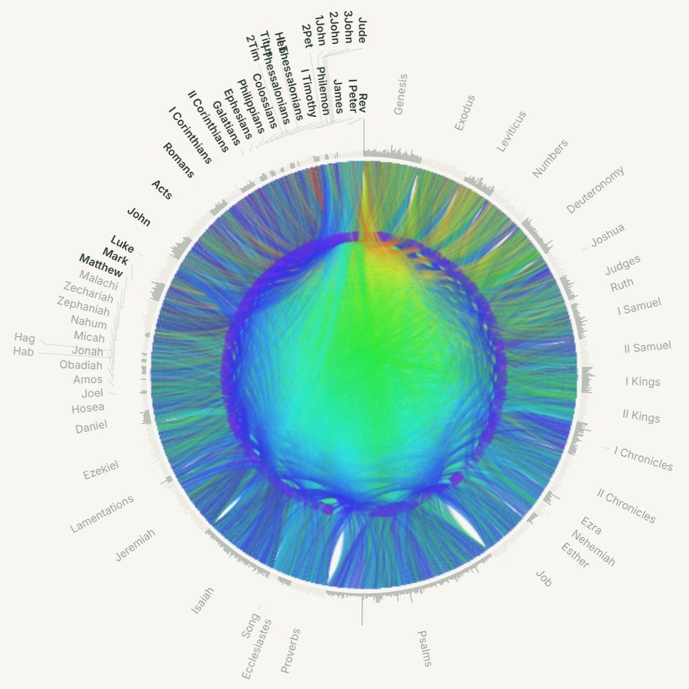
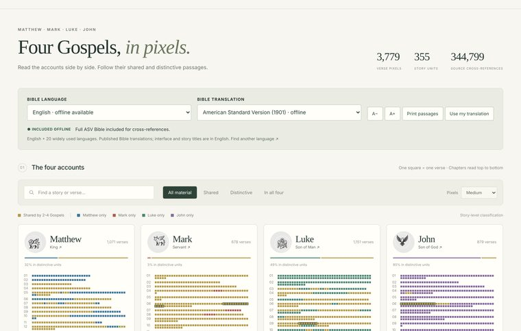
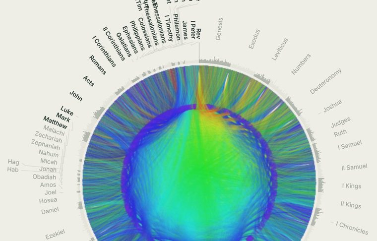
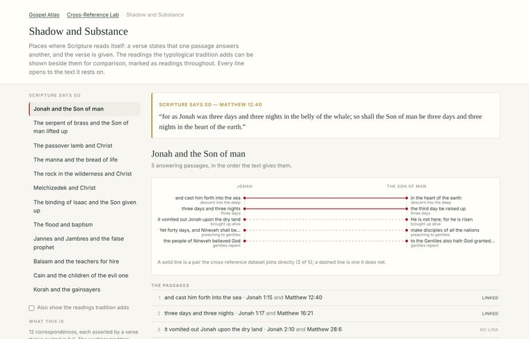

Free · offline · no account
The four Gospels as pixel maps with every parallel passage side by side in 21 languages. All 344,799 cross-references in the Bible, drawn as a circle and searchable. Typological passages set against the verses that answer them. Greek and Hebrew word by word throughout.
Nothing to install and nothing to sign up for. The download is a 10.6 MB ZIP; once it is unzipped it never needs the internet again.

Each one is a single HTML file. Open it from this page, or download all three and keep them on a memory stick.

One square, one verse. Click a square and read that story as all four Gospels tell it, in four columns, in any of 21 languages. Show the order, or line the parallels up and let the blank space make the point.
Open the Atlas →
The whole canon as a circle or an arc, with every link drawn. Focus one book, follow a chain from verse to verse, or search for a Greek or Hebrew word and see every place it stands.
Open the Lab →
Places where Scripture reads itself: a verse states that one passage answers another, and the verse is given. The readings the typological tradition adds can be shown beside them, marked as readings.
Open Shadow and Substance →The same file works on a phone, on a school laptop with everything locked down, and on a classroom machine with no network.
Every verse, every reference and every diagram is inside the file. Once it is on your machine it works on a plane, in a prison chapel, or anywhere the signal does not reach.
Nothing is sent anywhere. There is no sign-up, no email address, no analytics and no advertising. The page is not allowed to make a network request at all.
Any passage can be shown in the original, each word with its sound, its meaning and its grammar, from the STEPBible tagged texts. Search a word and find it everywhere it stands.
Keep a note against any view, bookmark where you were, and turn what you kept into a slide deck or a printable study. The deck is another plain HTML file.
Twelve are carried inside the file, with the interface in English. Your own translation can be imported if you have the text.
Email it, copy it to a memory stick, put it on a church network. There is no licence to buy and nothing to ask permission for.
One ZIP, 10.6 MB, holding all three tools and the instructions. Nothing in it needs installing.
Inside: Gospel_Atlas_David_Lee.html,
Cross_Reference_Lab.html, Shadow_and_Substance.html, the
start page, plain-text opening instructions and the reader's guide. Needs a current
Chrome, Edge, Firefox or Safari.
Nothing here is generated commentary. Every panel holds Scripture and references, and the sources are named so they can be checked.